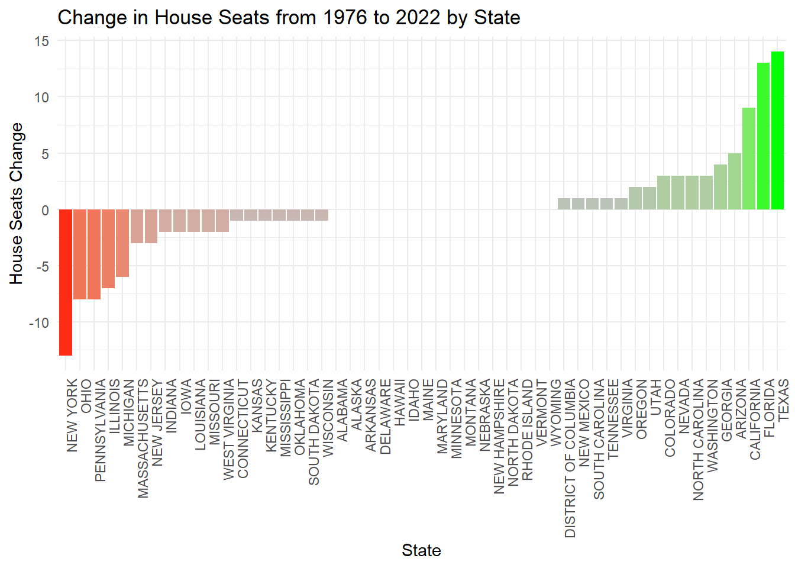
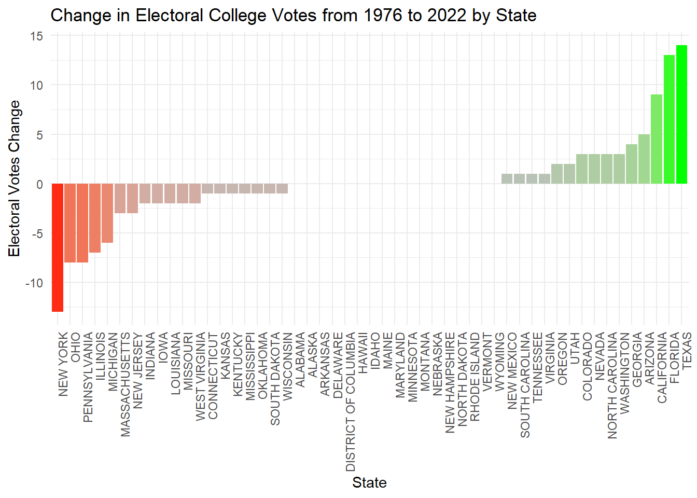
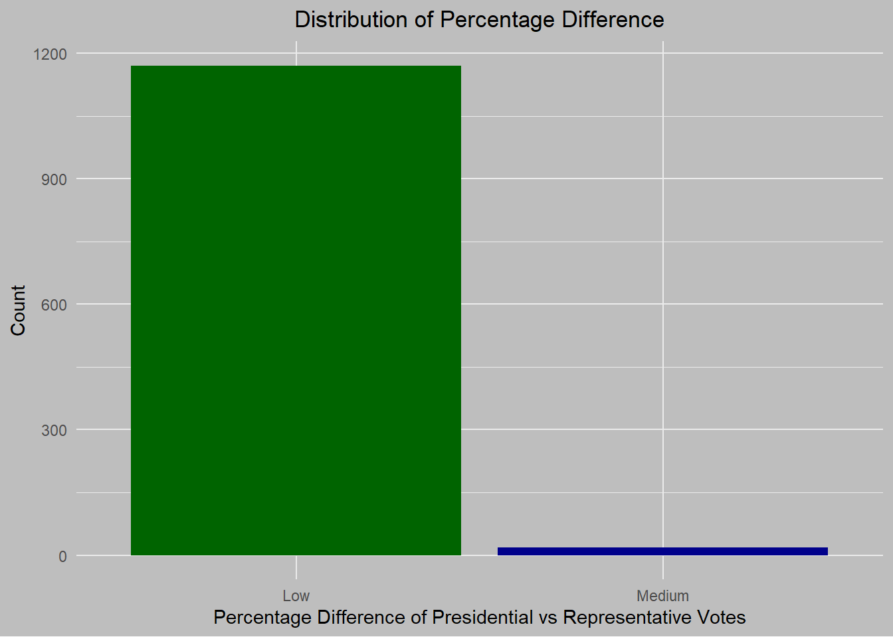
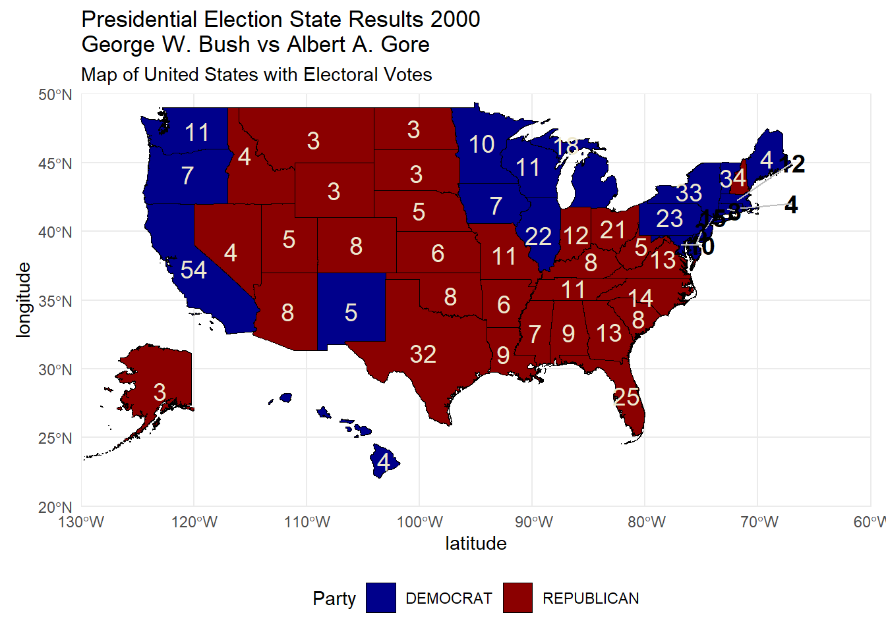
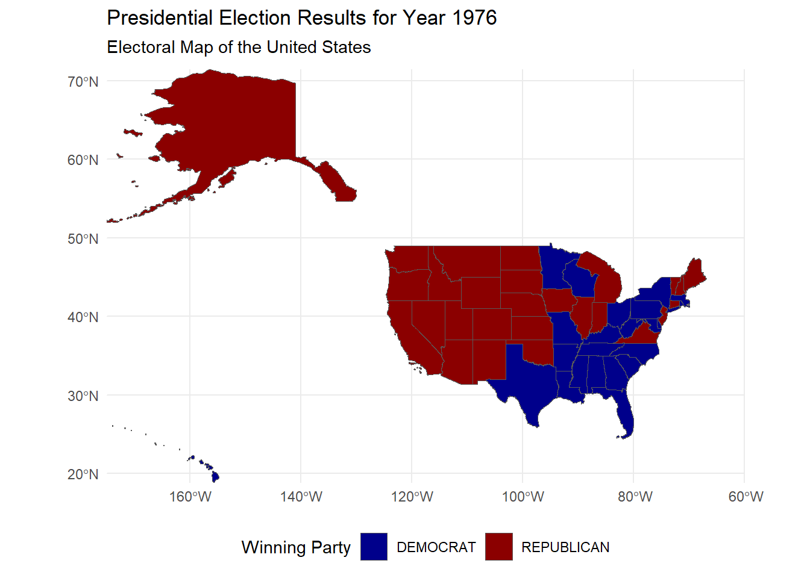
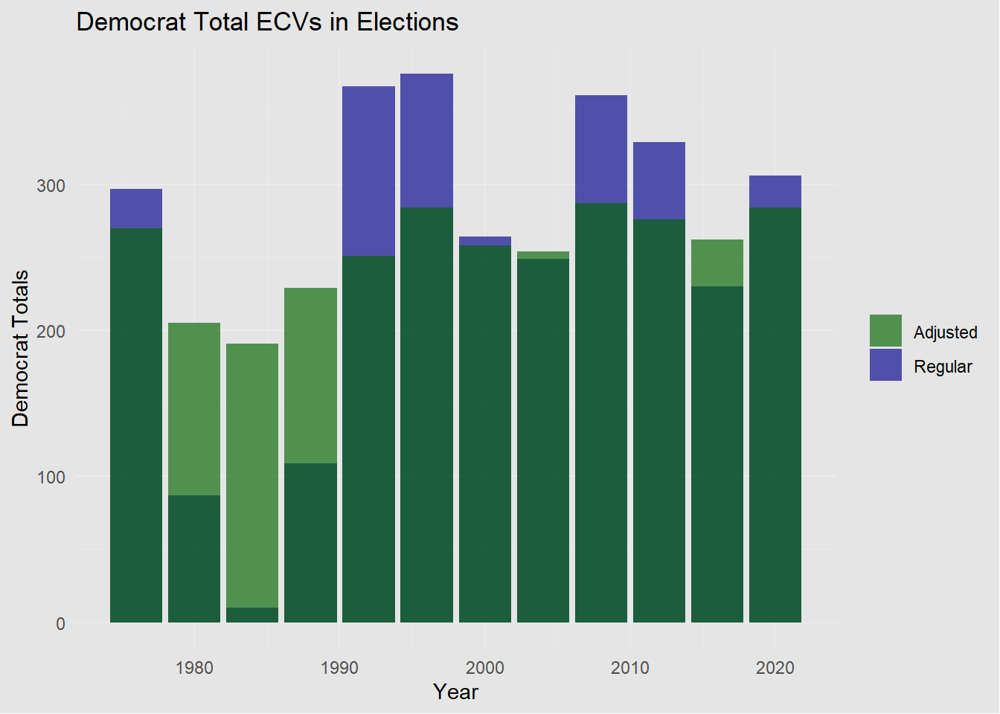
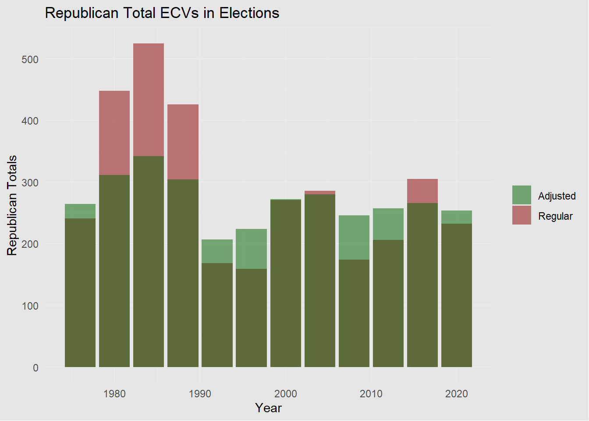

if (!require("data.table")) install.packages("data.table")
if (!require("dplyr")) install.packages("dplyr")
if (!require("DT")) install.packages("DT")
if (!require("gifski")) install.packages("gifski")
if (!require("gganimate")) install.packages("gganimate")
if (!require("ggplot2")) install.packages("ggplot2")
if (!require("plotly")) install.packages("plotly")
if (!require("readr")) install.packages("readr")
if (!require("sf")) install.packages("sf")
if (!require("tidyverse")) install.packages("tidyverse")
if (!require("tidyr")) install.packages("tidyr")
if (!require("tools")) install.packages("tools")
library(data.table)
library(gganimate)
library(gifski)
library(ggplot2)
library(plotly)
library(dplyr)
library(DT)
library(readr)
library(sf)
library(tidyr)
library(tidyverse)
library(tools)Mini Project 3
Introduction
With the 2024 election in the rear-view mirror, now seems to be as good of a time as any to reflect on the electoral process in the United States.
Figuring out the best way to represent the citizens is an ongoing debate in democracies. Through our representative democracy in the United States through, we elect members of Congress and the President to lead the Federal government on cycles of 2 years for a Representative and 6 years for a Senator, while the Presidential cycle is an election every 4 years.
This project is going to look at some election data from 1976 through 2020 for both the U.S. House of Representatives and the President, before ultimately asking and (lightly) answering if there is a better way to do our current election system for President, which involves delegating votes through the Electoral College.
TASK 0
This is a package-install if you want to replicate the work
TASK 1: US House Election Votes from 1976 to 2022
We download the dataset from MIT Election Data Science Lab for the U.S. House of Representatives and the President manually.
An election range of 1976 - 2022 for the House and 1976 - 2020 for the Presidency helps us keep a reasonable range to the “modern era” of U.S. Elections.
The below datatables are un-altered from the original data pull. Further tables will display with proper formatting and data cleaning.
Not much to see with the data as-is.
TASK 2: Congressional Boundary Files 1976 to 2012
We create and use a function to automatically download Congressional Shapefiles here, a UCLA site maintained by Jeffrey B. Lewis, Brandon DeVine, and Lincoln Pritcher with Kenneth C. Martis
Code
# Function to get district/congressional shapefiles
get_cdmaps_file <- function(fname, folder = "congressional_shapefiles") {
# Base URL for downloading
BASE_URL <- "https://cdmaps.polisci.ucla.edu/shp/"
# Add file extension
fname_ext <- paste0(fname, ".zip")
# Set the full destination path, including the folder and file name
destfile <- file.path(folder, fname_ext)
# Create the folder if it doesn't exist
if (!dir.exists(folder)) {
dir.create(folder)
}
# Download the file if it doesn't already exist in the folder
if (!file.exists(destfile)) {
FILE_URL <- paste0(BASE_URL, fname_ext)
download.file(FILE_URL, destfile = destfile)
cat("Downloaded:", fname_ext, "\n")
} else {
}
}
# Define range of districts, we want from 1976 through 2012
start <- 94
end <- 112
# Loop through each district number and download the file
for (i in start:end) {
district_code <- sprintf("districts%03d", i)
get_cdmaps_file(district_code)
}
# Read in manually downloaded shapefiles metadata so we know where to start and end
shapefiles <- read_csv("MP3/district_shapefiles.csv")
shapefiles |>
DT::datatable()This tells us the date-range that each district shapefile corresponds to. The number in the filename represents the election cycle for that district. This will be useful for further analysis.
TASK 3: Exploration of Vote Count Data
TASK 3.1: Flipped
Which states have gained and lost the most seats in the U.S. House of Representatives between 1976 and 2022?
In the U.S., the lower-body of Congress, the U.S. House of Representatives, may have no-more than 435 total Representatives at any given time. The number of representatives a state has is proportional to their population. As of the 2022 election, California is the most represented state with 52 representatives, while states like Alaska, Delaware, Vermont, and both of the Dakotas, each have only 1 representative. These numbers are always subject to change, for example, in the 2020 election California had 53 representatives. Below we’ll look at the net gain/loss for each state from 1976 through 2022, with a bit of focus on my home state of New York.
Code
# House overtime
house_grouped <- house |>
group_by(state, year) |>
summarize(
seats = n_distinct(district),
.groups = 'drop'
)
# Have to manually input for DC
house_grouped <- house_grouped |>
bind_rows(
data.frame(state = "DISTRICT OF COLUMBIA", year = 1976, seats = 0),
data.frame(state = "DISTRICT OF COLUMBIA", year = 2022, seats = 1) # See footnote
)
# Electoral Votes change from 1976 to 2022
house_overtime <- house_grouped |>
group_by(state) |>
mutate(votes_change = seats[year == 2022] - seats[year == 1976],
.groups = 'drop'
) |>
filter(year == 2022) |>
select(state,seats, votes_change)
# Identify the top 3 increases and decreases
top_increase <- house_overtime |>
ungroup() |>
slice_max(order_by = votes_change, n=3)
top_decrease <- house_overtime |>
ungroup() |>
arrange(votes_change) |>
slice_head(n=3)
# Add a 'highlight' column to label the states for plotting
state_changes <- house_overtime |>
mutate(
highlight = case_when(
state %in% top_increase$state ~ "increase",
state %in% top_decrease$state ~ "decrease",
TRUE ~ "normal"
)
)
# Barplot of changes overtime
ggplot(state_changes, aes(x = reorder(state, votes_change), y = votes_change, fill = votes_change)) +
geom_bar(stat = "identity") +
scale_fill_gradient2(
low = "red",
mid = "gray",
high = "green",
midpoint = 0, # Center the color scale
guide = "none" # Removes the legend
) +
labs(
x = "State",
y = "House Seats Change",
title = "Change in House Seats from 1976 to 2022 by State"
) +
theme_minimal() +
theme(axis.text.x = element_text(angle = 90, hjust = 1))
DC is counted as having a representative according to this dataset. According to DC’s website:
National Level Representation
DC residents elect a non-voting delegate to the US House of Representatives, two shadow Senators, and one shadow Representative whose task is to petition Congress for statehood.
Similarly, how many Electoral Votes have been gained/lost in that timespan?
Code
# Create table of electoral votes for later
evotes <- house |>
group_by(state, year) |>
summarize(
electoral_votes = n_distinct(district) + 2, # Num districts + 2
.groups = 'drop'
)
# Have to manually input for DC
evotes <- evotes |>
bind_rows(
data.frame(state = "DISTRICT OF COLUMBIA", year = 1976, electoral_votes = 3),
data.frame(state = "DISTRICT OF COLUMBIA", year = 2022, electoral_votes = 3)
)
#| code-fold: TRUE
# Electoral Votes change from 1976 to 2022
evotes_overtime <- evotes |>
group_by(state) |>
mutate(votes_change = electoral_votes[year == 2022] - electoral_votes[year == 1976],
.groups = 'drop'
) |>
filter(year == 2022) |>
select(state,electoral_votes, votes_change)
# Identify the top 3 increases and decreases
top_increase <- evotes_overtime |>
ungroup() |>
slice_max(order_by = votes_change, n=3)
top_decrease <- evotes_overtime |>
ungroup() |>
arrange(votes_change) |>
slice_head(n=3)
# Add a 'highlight' column to label the states for plotting
state_changes <- evotes_overtime |>
mutate(
highlight = case_when(
state %in% top_increase$state ~ "increase",
state %in% top_decrease$state ~ "decrease",
TRUE ~ "normal"
)
)
# Barplot of changes overtime
ggplot(state_changes, aes(x = reorder(state, votes_change), y = votes_change, fill = votes_change)) +
geom_bar(stat = "identity") +
scale_fill_gradient2(
low = "red",
mid = "gray",
high = "green",
midpoint = 0, # Center the color scale
guide = "none" # Removes the legend
) +
labs(
x = "State",
y = "Electoral Votes Change",
title = "Change in Electoral College Votes from 1976 to 2022 by State"
) +
theme_minimal() +
theme(axis.text.x = element_text(angle = 90, hjust = 1))
Taking a quick look at New York’s Electoral Votes over time for New York.
# View New York's electoral votes over the decades
evotes |>
filter(state == "NEW YORK", year %in% c(1980, 2000, 2020)) |>
DT::datatable(options=list(pageLength=3))And finally, a line graph of all 50 States’ Electoral Votes + DC
Code
# Create the line graph with ggplot2
line_graph <- ggplot(evotes, aes(x = year, y = electoral_votes, group = state, color = state)) +
geom_line() +
geom_point() +
scale_color_viridis_d() +
labs(
x = "Year",
y = "Electoral Votes",
title = "Electoral Votes by State from 1976 to 2012 (Interactive)",
subtitle = "Line Graph of Electoral Votes Over Time"
) +
theme_minimal() +
theme(
axis.text.x = element_text(angle = 90, hjust = 1),
legend.position = "none"
)
# Convert the ggplot2 plot to a plotly plot for interactivity
interactive_plot <- ggplotly(line_graph)
# Display the interactive plot
interactive_plotA bit of a busy linegraph because there’s 50 States + DC on it, but some interesting trends on it.
TASK 3.2: Fusion
New York State has a unique “fusion” voting system where one candidate can appear on multiple “lines” on the ballot and their vote counts are totaled. For instance, in 2022, Jerrold Nadler appeared on both the Democrat and Working Families party lines for NYS’ 12th Congressional District. He received 200,890 votes total (184,872 as a Democrat and 16,018 as WFP), easily defeating Michael Zumbluskas, who received 44,173 votes across three party lines (Republican, Conservative, and Parent).
Are there any elections in our data where the election would have had a different outcome if the “fusion” system was not used and candidates only received the votes their received from their “major party line” (Democrat or Republican) and not their total number of votes across all lines?
To answer this question, let’s first find the election mentioned above, then group votes on both party and candidate separately to see if we can find any outstanding differences between the two in any election.
Let’s group our house table on Candidate and Party.
Code
# Let's find this instance
house |>
filter(year==2022, state=="NEW YORK", district==12) |>
mutate(candidate = str_to_lower(candidate),
candidate = toTitleCase(candidate)) |>
group_by(candidate) |>
summarize(votes = sum(candidatevotes)) |>
arrange(desc(votes)) |>
DT::datatable(
colnames = c("Candidate", "Votes"),
options = list(
pageLength = 5,
columnDefs = list(
list(
targets = c(2),
render = JS(
"function(data, type, row, meta) {",
" return type === 'display' ? data.toString().replace(/\\B(?=(\\d{3})+(?!\\d))/g, ',') : data;",
"}"
)
))))Code
# Summarize the votes by Party rather than by Candidate
house |>
filter(year == 2022, state == "NEW YORK", district == 12) |>
mutate(party = tidyr::replace_na(party, "Blank/Write-In"),
party = str_to_lower(party),
party = toTitleCase(party)) |>
group_by(party) |>
summarize(votes = sum(candidatevotes)) |>
arrange(desc(votes)) |>
DT::datatable(
colnames = c("Party", "Votes"),
options = list(
pageLength = 7,
columnDefs = list(
list(
targets = c(2),
render = JS(
"function(data, type, row, meta) {",
" return type === 'display' ? data.toString().replace(/\\B(?=(\\d{3})+(?!\\d))/g, ',') : data;",
"}"
)
))))This is the sample from the prompt, both grouped by candidate name and their associated party(s).
Let’s answer this question by combining these two groupings.
The collapsed code below looked for instances where:
The candidate who won got some vote percentage between 30% and 70% of total votes (so it’s in a reasonable “flippable” range)
The candidate who won appeared on the ballot more than once
No party received more than 50% of the vote (If they did, then this question is moot)
Code
# First let's find races that were really close. Let's do this by defining a "% of total vote column"
# Create pctvote_party and pctvote_candidate columns
house <- house |>
# For pctvote_party, group by year, state, and party
group_by(year, state, district, party) |>
mutate(pctvote_party = candidatevotes / totalvotes) |>
# For pctvote_candidate, group by year, state, and candidate
group_by(year, state, district, candidate) |>
mutate(pctvote_candidate = sum(candidatevotes) / totalvotes) |>
# Ungroup to finish
ungroup() |>
add_count(year, state, district, candidate, name = "ballotcount")
# Let's find the most instances of multiple ballots
house_votes <- house |> # Start with just the cols we want
select(year, state, district, stage,
candidate, ballotcount,party,
candidatevotes,totalvotes,
pctvote_party, pctvote_candidate
) |>
group_by(year, state, candidate) |> # return anything where the percentage vote for the candidate fell into a reasonable range where it could be overturned
filter(all(pctvote_candidate > 0.3), all(pctvote_candidate < 0.7)) |>
ungroup() |>
group_by(year, state, district) |>
filter(any(ballotcount >= 2),
all(pctvote_party <= 0.5), # If any of the party votes have over 50%, it won't matter what the rest are
all(pctvote_candidate > 0.3), all(pctvote_candidate < 0.7)) |>
ungroup() |>
filter(n_distinct(c(year, state, district)) > 1) |>
group_by(year, state, district) |>
mutate(max_pctvote_candidate = pctvote_candidate == max(pctvote_candidate)) |>
ungroup() |>
group_by(year, state, district) |>
mutate(max_pctvote_party = pctvote_party == max(pctvote_party)) |>
ungroup() |>
mutate(max_pctvote_candidate = ifelse(max_pctvote_candidate, 1, 0),
max_pctvote_party = ifelse(max_pctvote_party, 1, 0))
house_votes |>
filter(year == 2000, state == "CONNECTICUT", district == 2) |>
select(year, state, district, candidate, party, ballotcount, candidatevotes, pctvote_candidate, pctvote_party, max_pctvote_party, max_pctvote_candidate) |>
mutate(state = str_to_lower(state),
state = toTitleCase(state),
candidate = str_to_lower(candidate),
candidate = toTitleCase(candidate),
party = str_to_lower(party),
party = toTitleCase(party)) |>
rename_with(~ str_to_title(.x)) |>
rename("Party Received Highest % Votes in Election" = `Max_pctvote_party`,
"Candidate Received Highest % Votes in Election" = `Max_pctvote_candidate`,
"Candidate's % Votes in Election" = `Pctvote_candidate`,
"Party's % Vote in Election" = `Pctvote_party`,
"Number of Times Candidate Appears on Ballot" = `Ballotcount`,
"Candidate Votes" = `Candidatevotes`) |>
DT::datatable(options = list(pageLength = 3,
columnDefs = list(
# Adding commas for these columns
list(
targets = c(7),
render = JS(
"function(data, type, row, meta) {",
" return type === 'display' ? data.toString().replace(/\\B(?=(\\d{3})+(?!\\d))/g, ',') : data;", # Adding commas
"}"
)
),
# Formatting as percentages for columns 6, 9, and 10
list(
targets = c(8,9),
render = JS(
"function(data, type, row, meta) {",
" return type === 'display' ? (data * 100).toFixed(2) + '%' : data;", # Formatting as percentage
"}"
)
)
)
)
)In Connecticut’s 2nd District in 2000, Sam Gejdenson’s Democratic party received the most votes, however candidate Rob Simmons on the Independent and Republican ticket won the vote by a razor-thin margin that required votes from both parties
TASK 3.3: Follow You Follow Me
Do presidential candidates tend to run ahead of or run behind congressional candidates in the same state? That is, does a Democratic candidate for president tend to get more votes in a given state than all Democratic congressional candidates in the same state?
Does this trend differ over time? Does it differ across states or across parties? Are any presidents particularly more or less popular than their co-partisans?
Looking at the percentage of votes won across the districts in both the Congressional and Presidential races should tell us the answer to this.
Code
# Let's change up the presidents table
# First grouping all of the parties by state, year, and district
# using `party_simplified`
presidents_states <- presidents |>
group_by(year, state, party_simplified) |>
summarize(partyvotes = sum(candidatevotes)) |>
ungroup() |>
group_by(year, state) |>
mutate(totalvotes = sum(partyvotes)) |>
ungroup() |>
mutate(pctvotes = if_else(is.na(partyvotes), 0, partyvotes / totalvotes))
# Creating a `party_simplified` column
party_dict <- presidents |>
distinct(party_simplified, party_detailed) |>
deframe() # This converts the two columns into a named vector
house <- house |>
mutate(
party_simplified = case_when(
party %in% names(party_dict) ~ party, # If the party matches one in the dictionary
is.na(party) ~ "OTHER", # If the party is NA
TRUE ~ "OTHER" # If the party is not found in the dictionary
))
# Create the same grouped df as for presidents
house_states <- house |>
group_by(year, state, party_simplified) |>
summarize(partyvotes = sum(candidatevotes)) |>
ungroup() |>
group_by(year, state) |>
mutate(totalvotes = sum(partyvotes)) |>
ungroup() |>
mutate(pctvotes = if_else(is.na(partyvotes), 0, partyvotes / totalvotes))
# Merge the two state pct dfs
merged_states <- presidents_states |>
left_join(house_states, by = c("year", "state", "party_simplified"), suffix = c("_president", "_house")) |>
mutate(across(ends_with("_house"), ~coalesce(.x, 0))) |> # Replace NAs in columns ending with _house with 0
filter(party_simplified %in% c("DEMOCRAT","REPUBLICAN")) |> # Yes we could look at libertarian and other, but it seems a bit overkill for this
rename(`party` = `party_simplified`) |>
mutate(pctdiff = abs(pctvotes_president - pctvotes_house)) |>
mutate(
pctdiff = abs(pctvotes_president - pctvotes_house), # Create percentage difference column
pctdiff_cat = case_when(
pctdiff < 0.35 ~ "Low",
pctdiff >= 0.35 & pctdiff <= 0.65 ~ "Medium",
pctdiff > 0.65 ~ "High"
)
) |>
filter(partyvotes_house > 1, partyvotes_president > 1) |>
mutate(pctvotes_president = round(pctvotes_president,4),
pctvotes_house = round(pctvotes_house, 4),
pctdiff = round(pctdiff, 4))
summarized_data <- merged_states |>
group_by(pctdiff_cat) |>
summarize(n = n()) # Summarizing the counts for each category
# Create the bar plot
ggplot(summarized_data, aes(x = pctdiff_cat, y = n, fill = pctdiff_cat)) +
geom_bar(stat = "identity", show.legend = FALSE) +
labs(
title = "Distribution of Percentage Difference",
x = "Percentage Difference of Presidential vs Representative Votes",
y = "Count"
) +
theme_minimal() +
theme(
plot.background = element_rect(fill = "gray", color = NA),
panel.background = element_rect(fill = "gray", color = NA),
legend.background = element_rect(fill = "gray", color = NA),
plot.title = element_text(hjust = 0.5)
) +
scale_fill_manual(values = c("Low" = "darkgreen", "Medium" = "darkblue", "High" = "darkred"))
Code
# These are the instances where there was a noticeable difference
merged_states |>
filter(pctdiff_cat %in% c("Medium","High")) |>
arrange(desc(pctdiff)) |>
mutate(year = str_to_lower(year),
year = toTitleCase(year),
state = str_to_lower(state),
state = toTitleCase(state),
party = str_to_lower(party),
party = toTitleCase(party)) |>
rename_with(~ str_to_title(.x)) |>
rename(
"Party's Votes in State & Year for Presidential Election" = `Partyvotes_president`,
"Total Votes in State & Year for Presidential Election" = `Totalvotes_president`,
"Votes % in State & Year for Party in Presidential Election" = `Pctvotes_president`,
"Party's Votes in State & Year for Congressional Election" = `Partyvotes_house`,
"Total Votes in State & Year for Congressional Election" = `Totalvotes_house`,
"Votes % in State & Year for Party in Congressional Election" = `Pctvotes_house`,
"Percentage Difference in State & Year between Presidential and House Votes" = `Pctdiff`,
"Category of Percentage Difference in State & Year between Presidential and House Votes" = `Pctdiff_cat`
) |>
DT::datatable(
options = list(
pageLength = 18,
columnDefs = list(
# Adding commas for these columns
list(
targets = c(4, 5, 7, 8),
render = JS(
"function(data, type, row, meta) {",
" return type === 'display' ? data.toString().replace(/\\B(?=(\\d{3})+(?!\\d))/g, ',') : data;", # Adding commas
"}"
)
),
# Formatting as percentages for columns 6, 9, and 10
list(
targets = c(6, 9, 10),
render = JS(
"function(data, type, row, meta) {",
" return type === 'display' ? (data * 100).toFixed(2) + '%' : data;", # Formatting as percentage
"}"
)
)
)
)
)Code
# Diff by party
merged_states |>
filter(pctdiff_cat == "Medium") |>
group_by(party) |>
summarize(Count = n()) |>
mutate(
party = str_to_lower(party),
party = toTitleCase(party)
) |>
rename(Party = `party`) |>
DT::datatable(options=list(pageLength=2),
caption = htmltools::tags$caption(
style = "caption-side: top; text-align: center; font-weight: bold; font-size: 16px;",
"Number of Times Party Race Was Significantly Different by Party"))Code
# Diff by states
merged_states |>
filter(pctdiff_cat == "Medium") |>
group_by(state) |>
summarize(count = n()) |>
arrange(desc(count)) |>
DT::datatable(options=list(pageLength=7),
caption = htmltools::tags$caption(
style = "caption-side: top; text-align: center; font-weight: bold; font-size: 16px;",
"Number of Times Party Race Was Significantly Different by State"))We see that, although it has somewhat happened, a district will usually vote the same along party-lines for any given election, with few exceptions.
Of the 1,189 District + Year combinations in the dataset that voted in both a Congressional race and Presidential race in the same year, 1,171 followed party-lines (had a deviation in total % of vote of less than 35%), while 18 were in a range of 35 - 65%, and none deviated above 65%.
TASK 4: Automate Zip File Extraction
Creating a function to automate extracting the zip files in the next task.
# Create a function to automatically download the shape files
read_shp_from_zip <- function(file) {
td <- tempdir()
zip_contents <- unzip(file, exdir = td)
fname_shp <- zip_contents[grepl("\\.shp$", zip_contents)] # filter for .shp files
shpfl <- read_sf(fname_shp) # Read the .shp file
return(shpfl) # Return the shpfl
}TASK 5: Chloropleth Visualization of the 2000 Presidential Election Electoral College Results
Here we create a Chloropleth Visualization of the 2000 Presidential Election between candidates Al Gore (D) and George W. Bush (R).
This was a particularly contentious election that was famously decided by the Supreme Court due to the uncertainty of the balloting system in Florida.

Code
# Find which file will have the 2000 election
files_dict <- read_csv("MP3/district_shapefiles.csv")
files_dict |>
DT::datatable(options=list(pageLength = 7))Reviewing the district shape files…
Code
file <- "MP3/congressional_shapefiles/districts106.zip"
shpfile <- read_shp_from_zip(file)
#####
# Get electoral votes from 2000
evotes_2000 <- evotes |>
filter(year == 2000) |>
select(-year)
# Get info from presidents table for that year
bush_v_gore <- presidents |>
filter(year == 2000) |>
group_by(state, party_simplified) |>
summarize(total_votes = sum(candidatevotes), .groups = "drop") |>
group_by(state) |>
slice_max(total_votes, n = 1) |>
ungroup() |>
select(state, party_simplified) |>
rename(winner = party_simplified)
# get info for our shapefile
dist106sf <- shpfile |>
mutate(STATENAME = toupper(trimws(STATENAME))) |>
left_join(bush_v_gore, by = c("STATENAME" = "state")) |>
left_join(evotes_2000, by = c("STATENAME" = "state"))
# Aggregate shapefile to the state level
states_sf <- shpfile |>
mutate(
STATENAME = toupper(trimws(STATENAME)), # ensure no white space and state names are consistent
geometry = st_make_valid(geometry)
) |>
group_by(STATENAME) |>
summarize(geometry = st_union(geometry), .groups = "drop")
# Merge aggregated shapefile with election results and electoral votes data
states_sf <- states_sf |>
left_join(bush_v_gore, by = c("STATENAME" = "state")) |>
left_join(evotes_2000, by = c("STATENAME" = "state"))
# Some smaller states are hard to see, let's try to get their info off the map
label_positions <- data.frame(
STATENAME = c("MASSACHUSETTS", "DELAWARE", "MARYLAND", "RHODE ISLAND",
"DISTRICT OF COLUMBIA", "NEW JERSEY", "CONNECTICUT"),
latitude = c(-67, -75, -75, -67, -76, -74, -72),
longitude = c(45, 40, 39, 42, 39, 41, 41.5)
)
# Merge with `states_sf` to include positions in the spatial data
states_sf <- states_sf |> left_join(label_positions, by = "STATENAME")
small_states <- c("MASSACHUSETTS", "DELAWARE", "MARYLAND", "RHODE ISLAND",
"DISTRICT OF COLUMBIA", "NEW JERSEY", "CONNECTICUT")
# Create main U.S. map with state-level electoral votes
cont_us <- ggplot(states_sf) +
geom_sf(aes(
geometry = geometry,
fill = winner
), color = "black") +
# Add electoral votes text for states not in `small_states`
geom_sf_text(
data = states_sf |> filter(!STATENAME %in% small_states),
aes(label = electoral_votes),
color = "cornsilk2", size = 5
) +
scale_fill_manual(values = c("DEMOCRAT" = "blue4", "REPUBLICAN" = "darkred")) +
theme_minimal() +
labs(
title = "Presidential Election State Results 2000\nGeorge W. Bush vs Albert A. Gore",
subtitle = "Map of United States with Electoral Votes",
fill = "Party"
) +
theme(legend.position = "bottom") +
coord_sf(xlim = c(-130, -60), ylim = c(20, 50), expand = FALSE)
# Add labels and connecting lines for small states
cont_us <- cont_us +
geom_text(
data = states_sf |> filter(STATENAME %in% small_states),
aes(x = latitude, y = longitude, label = electoral_votes),
color = "black", size = 5, fontface = "bold"
) +
geom_segment(
data = states_sf |> filter(STATENAME %in% small_states),
aes(
x = st_coordinates(st_centroid(geometry))[,1],
y = st_coordinates(st_centroid(geometry))[,2],
xend = latitude,
yend = longitude
),
color = "gray",
size = 0.5
)
# Create Alaska and Hawaii insets with state-level electoral votes
# Alaska Inset
alaska_sf <- states_sf[states_sf$STATENAME == "ALASKA", ]
inset_alaska <- ggplot(alaska_sf) +
geom_sf(aes(
geometry = geometry,
fill = winner
), color = "black") +
geom_sf_text(aes(
label = electoral_votes
), color = "cornsilk2", size = 5) +
scale_fill_manual(values = c("DEMOCRAT" = "blue4", "REPUBLICAN" = "darkred")) +
theme_void() +
theme(legend.position = "none") +
coord_sf(xlim = c(-180, -140), ylim = c(50, 72), expand = FALSE)
# Hawaii Inset
hawaii_sf <- states_sf[states_sf$STATENAME == "HAWAII", ]
inset_hawaii <- ggplot(hawaii_sf) +
geom_sf(aes(
geometry = geometry,
fill = winner
), color = "black") +
geom_sf_text(aes(
label = electoral_votes
), color = "cornsilk2", size = 5) +
scale_fill_manual(values = c("DEMOCRAT" = "blue4", "REPUBLICAN" = "darkred")) +
theme_void() +
theme(legend.position = "none") +
coord_sf(xlim = c(-161, -154), ylim = c(18, 23), expand = FALSE)
# Combine everything, with Alaska and Hawaii insets
bush_v_gore_map <- cont_us +
annotation_custom(ggplotGrob(inset_alaska),
xmin = -120, xmax = -130, # Adjust position for Alaska
ymin = 15, ymax = 40
) +
annotation_custom(ggplotGrob(inset_hawaii),
xmin = -115, xmax = -100, # Adjust position for Hawaii
ymin = 20, ymax = 30
)
# Display the map
print(bush_v_gore_map)
Having some trouble with the pop-outs for the EV’s on smaller states, but it works.
It’s interesting to see how different regions voted in this election.
The Northeast (sans New Hampshire), West Coast, and about half of the Midwest went to Vice President Gore, while President-Elect Bush received the other half of the Midwest, most of the Southwest (sans New Mexico), and the Southeast. The non-Continental U.S. split between Bush for Alaska and Gore for Hawaii.
TASK 6: Advanced Chloropleth Visualization of Electoral College Results
For this next step, we just want to view the same map as from Task 5 but for each year of the Presidential cycle.
Code
election_years <- seq(1976, 2012, by = 4)
winner <- function(election_year) {
presidents |>
filter(year == election_year) |>
group_by(state, year, party_simplified) |>
summarize(total_votes = sum(candidatevotes), .groups = "drop") |>
group_by(state) |>
slice_max(total_votes, n = 1) |>
ungroup() |>
select(state, year, party_simplified) |>
rename(winner = party_simplified)
}
# Calculate total votes, include candidate name
state_results <- presidents |>
filter(party_simplified %in% c("DEMOCRAT", "REPUBLICAN")) |>
group_by(year, state, party_simplified) |>
summarize(
totalvotes = sum(candidatevotes),
candidate = first(candidate), # Assuming `candidate` column exists
.groups = "drop"
)
# Left-join the evotes table
state_results <- state_results |>
left_join(evotes, by = c("state", "year"))
# Determine the winner for each state and year
state_results <- state_results |>
group_by(year, state) |>
mutate(
is_winner = totalvotes == max(totalvotes) # Flag the winning party
) |>
ungroup() |>
filter(is_winner == TRUE) |>
rename(`party` = `party_simplified`)
overall_winners <- state_results |>
filter(is_winner == TRUE) |> # Keep only state winners
group_by(year, party, candidate) |> # Group by year, party, and candidate
summarize(
total_evotes = sum(electoral_votes, na.rm = TRUE), # Sum electoral votes
.groups = "drop"
) |>
group_by(year) |> # Group by year to determine the overall winner
slice_max(total_evotes, n = 1, with_ties = FALSE) |> # Take the top party-candidate for each year
ungroup() |>
select(year, winning_party = party, candidate, total_evotes) |> # Select relevant columns
arrange(year) # Sort by year
winner_by_year <- bind_rows(lapply(election_years, winner))Code
states_shp <- read_shp_from_zip("MP3/tl_2020_us_state.zip")
states_shp <- states_shp |>
mutate(NAME = toupper(trimws(NAME))) |>
left_join(winner_by_year,
join_by(NAME == state),
relationship = 'many-to-many') |>
filter(!is.na(year))
# I tried to get it to iteratively show the winning party + candidate but ended up bricking everything
# This is now a stretch goal
animated_maps <- ggplot(states_shp,
aes(fill = winner),
color = "black") +
geom_sf() +
scale_fill_manual(values = c("DEMOCRAT" = "blue4", "REPUBLICAN" = "darkred")) +
theme_minimal() +
labs(
title = "Presidential Election Results for Year {closest_state}",
subtitle = "Electoral Map of the United States",
fill = "Winning Party"
) +
theme(legend.position = "bottom") +
transition_states(year, transition_length = 0, state_length = 1) +
coord_sf(xlim = c(-175, -60), expand = FALSE)
animate(animated_maps, renderer = gifski_renderer(file = "election_results_animation.gif"))
Some things to work out with this, but it works. A future goal is to add the winner from each year’s election (Party + Candidate) but it’s proved challenging so far.
It is interesting to see how elections don’t seem to have any consistency; regions that are deep-Red one year end up deep-Blue the next.
TASK 7: Evaluating Fairness of ECV Allocation Schemes
Write a fact check evaluating the fairness of the different ECV electoral allocation schemes.
To do so, you should first determine which allocation scheme you consider “fairest”. You should then see which schemes give different results, if they ever do. To make your fact check more compelling, select one election where the ECV scheme had the largest impact–if one exists–and explain how the results would have been different under a different ECV scheme.
As you perform your analysis, you may assume that the District of Columbia has three ECVs, which are allocated to the Democratic candidate under all schemes except possibly national popular vote.
Fact-checking the fairness of the Presidential Electoral Process is a controversial topic to say the least. Our current system allots the winning electoral votes, which is defined as \(R+2\) Where \(R\) is the number of Representatives for any given state (and \(2\) could also be seen as the number of Senators per state, which is \(2\) each), as 100% to the winner of each states’ popular vote. Alternatives to this process have been proposed and, as discussed further down, two states have even implemented a different process, so let’s get into it.
Code
# Current Method: EV to whoever wins the vote in the state
presidents |>
rename(`party` = `party_simplified`) |>
filter(party %in% c("DEMOCRAT","REPUBLICAN")) |>
group_by(party, state, year) |>
summarize(votes = sum(candidatevotes)) |>
filter(state == "NEW YORK", year == 2020) |>
mutate(
party = str_to_lower(party),
party = toTitleCase(party),
state = str_to_lower(state),
state = toTitleCase(state)
) |>
rename_with(~ str_to_title(.x)) |>
DT::datatable(options = list(
pageLength = 2,
columnDefs = list(
# Adding commas for these columns
list(
targets = c(4),
render = JS(
"function(data, type, row, meta) {",
" return type === 'display' ? data.toString().replace(/\\B(?=(\\d{3})+(?!\\d))/g, ',') : data;", # Adding commas
"}"
)
))))Here, for example, New York’s 29 Electoral College Votes went to the Democrats in 2020 with a vote advantage of 5.2 million to 3.2 million.
This is a very standard example of how the system works. For the most part, it is a “winner takes all” ballot, with few exceptions.
Let’s explore a few other methods of determining the race.
First up, the overall popular vote.
Let’s first create a table that has the popular votes and EVs won and compare.
Code
# create a table that has the votes per party per state for each election, the number of EVs, and the winner
race_winners <- presidents |>
rename(party = party_simplified) |>
group_by(party, state, year) |>
summarize(votes = sum(candidatevotes), .groups = "drop") |>
pivot_wider(
names_from = party,
values_from = votes,
names_prefix = "" # No prefix
) |>
left_join(evotes, by = c("state", "year")) |>
mutate(
state_winner = ifelse(DEMOCRAT > REPUBLICAN, "D", "R") # Use uppercase column names
) |>
rename(
democrat_votes = DEMOCRAT,
republican_votes = REPUBLICAN,
electoral_votes = electoral_votes # Replace with the correct column name from `evotes`
)
# Getting total votes and replacing NULLs
race_winners <- race_winners |>
rename(libertarian_votes = LIBERTARIAN,
other_party_votes = OTHER) |>
mutate(across(everything(), ~replace_na(.,0))) |>
mutate(total_votes = democrat_votes + libertarian_votes + other_party_votes + republican_votes)
# grouping by yearly winners
yearly_winners <- race_winners |>
group_by(year) |>
summarize(dem_votes = sum(democrat_votes),
rep_votes = sum(republican_votes),
dem_evs = sum(electoral_votes[state_winner == "D"], na.rm = TRUE),
rep_evs = sum(electoral_votes[state_winner == "R"], na.rm = TRUE),) |>
mutate(popular_vote_winner = ifelse(dem_votes > rep_votes, "Democrats", "Republicans"),
ec_vote_winner = ifelse(dem_evs > rep_evs, "Democrats", "Republicans"))
# Are there any instances where the candidate who won the election didn't win the popular vote?
yearly_winners |>
filter(popular_vote_winner != ec_vote_winner) |>
rename(
"Year" = `year`,
"Democrat Votes" = `dem_votes`,
"Republican Votes" = `rep_votes`,
"Democrat ECVs Won" = `dem_evs`,
"Republican ECVs Won" = `rep_evs`,
"Popular Vote Winner" = `popular_vote_winner`,
"ECV Winner" = `ec_vote_winner`
) |>
DT::datatable(options = list(
pageLength = 2,
columnDefs = list(
# Adding commas for these columns
list(
targets = c(2,3),
render = JS(
"function(data, type, row, meta) {",
" return type === 'display' ? data.toString().replace(/\\B(?=(\\d{3})+(?!\\d))/g, ',') : data;", # Adding commas
"}"
)
))))There are two instances where the candidate who won the popular vote didn’t win the election, in 2000 and 2016, both going in the Republican party’s favor.
However, going by popular vote isn’t necessarily the best way either. A lot of criticisms of the current system is that it puts way too much weight on to several states for each election cycle, ie Ohio and Pennsylvania, since it’s assumed that other states are virtually already accounted for, such as New York and Texas.
But, going by the popular vote might not be the answer either. If we just cared who won the popular vote, then we might in-fact have the opposite problems: places with large population centers such as New York, California, Illinois, and Texas will be catered to, while other states could be “safely” ignored. Basically, win the cities, win the election.
A method I’ve been interested in is proportional votes. This method gives Electoral College votes proportional to the districts in a state.
Currently, only Maine and Nebraska practice this, which has given electoral votes to those states’ “losing party” on several occasions each.
Below is a table that calculates “proportional electoral votes” for the four major categories: Democrat, Republican, Libertarian, and Other.
It calculates the % of candidate votes receieved as part of the total for each state-year combination, then takes that percentage of the vote and applies it to the number of electoral votes that a given state-year combo has.
Using our working example of New York in 2020, where the Democrats received all 29 electoral votes, in this adjusted method, they now receive only 19 while Republicans gain the remaining 10.
This is imperfect and due to rounding-down, there were remaining electoral votes. I have decided to give any remaining votes (minimum of 1, maximum of 3) to whichever party won the most candidate votes for a state-year combo. Because this is just exploratory analysis, this is fine, but there might be other, better ways of doing this.
Code
# first, want to re-arrange the columns from race_winners table
setcolorder(race_winners, c("state","year", "democrat_votes","republican_votes",
"libertarian_votes","other_party_votes","total_votes",
"electoral_votes","state_winner"))
# creating adjusted race winners df
race_winners_adjusted <- race_winners |>
mutate(pct_dem = democrat_votes/total_votes, # calculate % of vote won for each party
pct_rep = republican_votes/total_votes,
pct_lib = libertarian_votes/total_votes,
pct_oth = other_party_votes/total_votes) |>
mutate(dem_evs = floor(pct_dem * electoral_votes), # calculate evs as a % of votes won
rep_evs = floor(pct_rep * electoral_votes),
lib_evs = floor(pct_lib * electoral_votes),
oth_evs = floor(pct_oth * electoral_votes)) |>
mutate(remaining_votes = electoral_votes - dem_evs - rep_evs - lib_evs - oth_evs) |> # calculate remainder votes
mutate(
dem_evs = dem_evs + if_else(pct_dem == pmax(pct_dem, pct_rep, pct_lib, pct_oth), remaining_votes, 0), # give remainder votes to whichever party won the popular vote in the state-year combo
rep_evs = rep_evs + if_else(pct_rep == pmax(pct_dem, pct_rep, pct_lib, pct_oth), remaining_votes, 0),
lib_evs = lib_evs + if_else(pct_lib == pmax(pct_dem, pct_rep, pct_lib, pct_oth), remaining_votes, 0),
oth_evs = oth_evs + if_else(pct_oth == pmax(pct_dem, pct_rep, pct_lib, pct_oth), remaining_votes, 0),
remaining_votes = 0 # Reset remaining_votes to 0 since it's redistributed
) |>
select(-`remaining_votes`) # Let's also drop it for good measure
race_winners_adjusted |>
filter(state %in% c("NEW YORK","CALIFORNIA","TEXAS","FLORIDA"), year == 2020) |>
select(state, pct_dem,pct_rep,pct_lib,pct_oth,total_votes,
electoral_votes,dem_evs,rep_evs,lib_evs,oth_evs) |>
mutate(
state = str_to_lower(state)
) |>
rename(
"State" = `state`,
"Percentage Votes for Democrat Party" = `pct_dem`,
"Percentage Votes for Republican Party" = `pct_rep`,
"Percentage Votes for Libertarian Party" = `pct_lib`,
"Percentage Votes for Other Parties" = `pct_oth`,
"Total Votes" = `total_votes`,
"Electoral College Votes" = `electoral_votes`,
"Democrat Party ECVs Won" = `dem_evs`,
"Republican Party ECVs Won" = `dem_evs`,
"Libertarian Party ECVs Won" = `dem_evs`,
"Other Party ECVs Won" = `dem_evs`,
) |>
DT::datatable(
options = list(pageLength = 4,
columnDefs = list(
# Adding commas for these columns
list(
targets = c(6),
render = JS(
"function(data, type, row, meta) {",
" return type === 'display' ? data.toString().replace(/\\B(?=(\\d{3})+(?!\\d))/g, ',') : data;", # Adding commas
"}"
)
),
# Formatting as percentages for columns 6, 9, and 10
list(
targets = c(2,3,4,5),
render = JS(
"function(data, type, row, meta) {",
" return type === 'display' ? (data * 100).toFixed(2) + '%' : data;", # Formatting as percentage
"}"
)
)
)
)
)Viewing several states from the 2020 election, we can see how different a semi-proportional electoral system might look.
Instead of Democrats winning 55 from California and 29 from New York, they’ve won 37 and 19 respectively.
Conversely, Republicans instead of winning all 38 votes from Texas and 29 from Florida, would have received 21 and 16 from each respectively.
Code
# Other parties?
race_winners_adjusted |>
filter(lib_evs + oth_evs >= 1) |>
select(state, year, electoral_votes, dem_evs, rep_evs, lib_evs, oth_evs) |>
mutate(
state = str_to_lower(state),
state = toTitleCase(state)
) |>
rename(
"State" = `state`,
"Year" = `year`,
"Total Electoral College Votes" = `electoral_votes`,
"Democrat ECVs Won" = dem_evs,
"Republican ECVs Won" = rep_evs,
"Libertarian ECVs Won" = lib_evs,
"Other-Party ECVs Won" = oth_evs
) |>
DT::datatable()Although there are only 73 such instances, we also see this type of voting could be a way to show how well third parties might do.
Although it would have only happened twice, in Texas and California in 2016, the Libertarian Party would have two electoral votes to their name.
Keep in mind from the data-table that the “other” party here isn’t neccesarily a single party winning those votes. We can see trends in other party popularity though and how many votes they would have taken away from the winner-takes-all situation, especially in 1992.
Code
# Other parties?
race_winners_adjusted |>
filter(lib_evs + oth_evs >= 1) |>
select(state, year, electoral_votes, dem_evs, rep_evs, lib_evs, oth_evs) |>
mutate(
state = str_to_lower(state),
state = toTitleCase(state)
) |>
rename(
"State" = `state`,
"Year" = `year`,
"Total Electoral College Votes" = `electoral_votes`,
"Democrat ECVs Won" = dem_evs,
"Republican ECVs Won" = rep_evs,
"Libertarian ECVs Won" = lib_evs,
"Other-Party ECVs Won" = oth_evs
) |>
DT::datatable()Code
# Let's look at California's ballot in 1992
presidents |>
filter(state == "CALIFORNIA", year == 1992) |>
group_by(candidate, party_detailed, party_simplified, candidatevotes, totalvotes) |>
summarize(pct_vote = round(candidatevotes / totalvotes,4)*100) |>
mutate(pct_ev = round((pct_vote * 54)/100,2),
candidate = str_to_lower(candidate),
candidate = toTitleCase(candidate),
candidate = tidyr::replace_na(candidate, "Blank/Write-In"),
party_detailed = str_to_lower(party_detailed),
party_detailed = toTitleCase(party_detailed),
party_detailed = tidyr::replace_na(party_detailed, "Blank/Write-In"),
party_simplified = str_to_lower(party_simplified),
party_simplified = toTitleCase(party_simplified)) |>
ungroup() |>
arrange(desc(pct_vote)) |>
rename(
"Candidate" = `candidate`,
"Party" = `party_detailed`,
"Party Simplified" = `party_simplified`,
"Candidate Votes" = `candidatevotes`,
"Total Votes" = `totalvotes`,
"Candidate % of Total Votes" = `pct_vote`,
"Candidate % of ECVs" = `pct_ev`
) |>
DT::datatable(
options = list(pageLength = 7,
columnDefs = list(
# Adding commas for these columns
list(
targets = c(4,5),
render = JS(
"function(data, type, row, meta) {",
" return type === 'display' ? data.toString().replace(/\\B(?=(\\d{3})+(?!\\d))/g, ',') : data;", # Adding commas
"}"
)
),
# Formatting as percentages for columns 6, 9, and 10
list(
targets = c(6,7),
render = JS(
"function(data, type, row, meta) {",
" return type === 'display' ? (data).toFixed(2) + '%' : data;", # Formatting as percentage
"}"
)
)
)
)
)This makes sense – Ross Perot was a famous third-party candidate in 1992. His Independent Party would have received 11 electoral votes from California in this election. In this system, he also won 8 electoral votes in New York and 11 in Texas in 1992.
Finally, let’s see if any election from 1976 - 2020 changes if we use this system instead.
Code
# Calculate electoral votes for each year
evs_by_year <- race_winners |>
group_by(year) |>
summarize(dem_totals = sum(electoral_votes[state_winner == "D"], na.rm = TRUE),
rep_totals = sum(electoral_votes[state_winner == "R"], na.rm = TRUE),
lib_totals = 0,
oth_totals = 0
) |>
mutate(winner = ifelse(dem_totals > rep_totals, "DEMOCRAT", "REPUBLICAN"))
# Calculate adjusted electoral votes for each year
evs_by_year_adjusted <- race_winners_adjusted |>
group_by(year) |>
summarize(dem_totals = sum(dem_evs),
rep_totals = sum(rep_evs),
lib_totals = sum(lib_evs),
oth_totals = sum(oth_evs)) |>
mutate(winner = ifelse(dem_totals > rep_totals, "DEMOCRAT", "REPUBLICAN"))
# Combine the two datasets
combined_data <- bind_rows(
evs_by_year |> mutate(dataset = "Regular"),
evs_by_year_adjusted |> mutate(dataset = "Adjusted")
)
# Create the plot
ggplot(combined_data, aes(x = year, y = dem_totals, fill = dataset)) +
geom_bar(stat = "identity", position = "identity", alpha = 0.65) +
scale_fill_manual(values = c("Regular" = "darkblue", "Adjusted" = "darkgreen")) +
labs(
title = "Democrat Total ECVs in Elections",
x = "Year",
y = "Democrat Totals"
) +
theme_minimal() +
theme(
legend.title = element_blank(), # Optionally remove legend title
plot.background = element_rect(fill = "gray90", color = NA),
panel.background = element_rect(fill = "gray90", color = NA)
)
Code
# Create the plot
ggplot(combined_data, aes(x = year, y = rep_totals, fill = dataset)) +
geom_bar(stat = "identity", position = "identity", alpha = 0.5) +
scale_fill_manual(values = c("Regular" = "darkred", "Adjusted" = "darkgreen")) +
labs(
title = "Republican Total ECVs in Elections",
x = "Year",
y = "Republican Totals"
) +
theme_minimal() +
theme(
legend.title = element_blank(),
plot.background = element_rect(fill = "gray90", color = NA),
panel.background = element_rect(fill = "gray90", color = NA)
)
Overall, the Democrats seemingly would stand to gain more seats should we use proportional electoral votes.
Code
# Creating interactive line plot
plt <- ggplot(combined_data, aes(x = year)) +
# Creating total lines
geom_line(aes(y = dem_totals, color = "Democrats"), size = 1.5) +
geom_line(aes(y = rep_totals, color = "Republicans"), size = 1.5) +
geom_line(aes(y = lib_totals, color = "Libertarians"), size = 1.5) +
geom_line(aes(y = oth_totals, color = "Other Parties"), size = 1.5) +
# color scale
scale_color_manual(
values = c(
"Democrats" = "darkblue",
"Republicans" = "darkred",
"Libertarians" = "#FFD700",
"Other Parties" = "darkgreen"
)
) +
labs(
title = "Election Totals by Year",
x = "Year",
y = "Electoral Votes",
color = "Party"
) +
facet_wrap(~dataset, scales = "free_y") + # Separate lines for each dataset
theme_minimal() +
theme(legend.position = "bottom",
legend.title = element_blank(),
plot.background = element_rect(fill = "gray90", color = NA),
panel.background = element_rect(fill = "gray90", color = NA)
)
interactive_plot <- ggplotly(plt)
# Customize hover text to show vote counts
interactive_plot <- interactive_plot |>
layout(
hoverlabel = list(
bgcolor = "white",
font = list(family = "Arial", size = 12, color = "black")
),
hovermode = "closest"
)
# Show the interactive plot
interactive_plotAs we can see, the electoral votes get a lot closer in general with third-parties getting involved a bit. One election that in the current system appeared to be a rout, 1992, is actually a lot closer than previously though, though the Democrats would still hang on to win it 254 - 207, with 77 votes going to Independent Ross Perot. 1984 and 2008 are still landslides, but maybe they don’t look as bad this way?
Finally, the big question, does any election flip in this system?
Code
# combine the two EV columns
combined_ev_data <- evs_by_year |>
left_join(evs_by_year_adjusted,
by="year",suffix=c("_regular", "_adjusted")) |>
mutate(dem_diff = dem_totals_adjusted - dem_totals_regular, # create differential cols
rep_diff = rep_totals_adjusted - rep_totals_regular,
lib_diff = lib_totals_adjusted - lib_totals_regular,
oth_diff = oth_totals_adjusted - oth_totals_regular,
new_winner = ifelse(winner_regular != winner_adjusted, 1, 0))
setcolorder(combined_ev_data, c("year","winner_regular","winner_adjusted","new_winner",
"dem_totals_regular","dem_totals_adjusted","dem_diff",
"rep_totals_regular","rep_totals_adjusted","rep_diff",
"lib_totals_regular","lib_totals_adjusted","lib_diff",
"oth_totals_regular","oth_totals_adjusted","oth_diff")) # Set col order
combined_ev_data |>
mutate(
winner_regular = str_to_lower(winner_regular),
winner_regular = toTitleCase(winner_regular),
winner_adjusted = str_to_lower(winner_adjusted),
winner_adjusted = toTitleCase(winner_adjusted)) |>
rename(
"Year" = `year`,
"Actual Winner" = `winner_regular`,
"Proportional ECVs Winner" = `winner_adjusted`,
"New Winner (0 = No, 1 = Yes)" = `new_winner`,
"Total Democrat ECVs" = `dem_totals_regular`,
"Adjusted Democrat ECVs" = `dem_totals_adjusted`,
"Difference in Democrat ECVs" = `dem_diff`,
"Total Republican ECVs" = `rep_totals_regular`,
"Adjusted Republican ECVs" = `rep_totals_adjusted`,
"Difference in Republican ECVs" = `rep_diff`,
"Total Libertarian ECVs" = `lib_totals_regular`,
"Adjusted Libertarian ECVs" = `lib_totals_adjusted`,
"Difference in Libertarian ECVs" = `lib_diff`,
"Total Other Party ECVs" = `oth_totals_regular`,
"Adjusted Other Party ECVs" = `oth_totals_adjusted`,
"Difference in Other Party ECVs" = `oth_diff`,
) |>
DT::datatable(options = list(pageLength = 12)) # Only 12 to displaySo, no, even in this adjusted format, none of the races are flipped. However, they are a lot closer than before. 2016 for example would have come down to the wire, with the Republicans only winning by a single electoral vote. However, in the other race where the candidate who won the popular vote lost, 2000, we see the Democrats actually lose adjusted votes in this method, as other parties manage to take 5 electoral votes away from them + 1 for the Republicans.